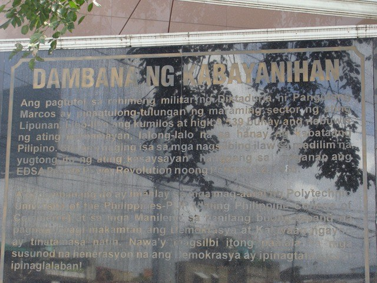

What to See
PYLON
The first thing and maybe also the most notable to see when going to the Main branch of the Polytechnical University of the Philippines is the Pylon which is the 3 Pillars situated side by side at the entrance.
The Pylon originally stood for the true, the good and the beautiful. The Triad of pillars may also stand for wisdom, strength and beauty because there should be wisdom to contrive, strength to support and beauty to adorn any great or important undertaking. Since 1987, however, the Pylon came to symbolized truth, excellence and wisdom.
MURAL

Aside from the Pylon in the entrance on the left side of the gates which is the exit a mural sculpture is positioned in the wall.
The sculpture at the gate is called “Consolidated Growth Through Education” done in 1974 by renowned sculptor Eduardo Castrillo.The mural is located at the main gate of the University Mabini Campus. The brass sculpture depicts the purposeful growth of the Filipino youth. It also signifies the role and responsibility of the youth in the progress and development of the nation, which the University recognizes. As an institution dutifully concerned in shaping the lives of the youth, the University pays tribute to the hope and builder of the world tomorrow through this artistic interpretation.
Also at the gate is a memorial called “Dambana ng Kabayanihan” or the Shrine of Heroism, dedicated to the youth leaders who opposed the Marcos dictatorship, many of whom came from this university.
BAHAY NI MABINI
Officially, the Santa Mesa campus is called the Mabini campus, named after one of the leading intellectuals of the Philippine Revolution, Apolinario Mabini. Interestingly, Mabini used to live in a house in the Nagtahan area, around 1.5-2 kms. away from the campus, right near where Nagtahan Bridge now stands. What better place suited to move it to than to PUP’s campus that was named after him. Thus, the Mabini Shrine stands as a landmark in the campus since 2008.
OBELISK

TERESA STREET
Teresa St. is also notable for being the only remnant of Manila’s street pedestrianization program initiated by former Mayor Lito Atienza. Originally it was intended that the street not to be opened to any vehicular traffic. But somehow the rules were somewhat softened as vehicles ply along the stretch of the street from time to time. Besides, there is not much a regular flow of vehicles in this street, save for some pedicabs passing by. Teresa St. has always been mostly a street for foot traffic.
Given its proximity to PUP, it is not surprising to see various businesses that have put up shop in this part of town. Internet shops, food stalls, school supply retailers to name a few. Given also the market, mostly students coming from the middle or lower classes, it is a good place to find cheap foodfare as well.
Dubbed as “Sisigan sa Teresa”, I bet a lot of us would now want to try this 40-pesos sizzling sisig at Sizzling House. As you drop by Manila and get the craving to eat Sisig, With its affordable meals that start from 40 pesos for Sizzling Pork Sisig and Sizzling Chicken Sisig, your choice of spicy level will surely make you scream for an extra rice. It is like no other common sisig you can get from karenderyas outside.
Here's unlimited plain lugaw for only Php10.00 located at Altura Ext., Sta. Mesa Manila, just a couple of footsteps away from Teresa street and PUP, Manila. One of the most popular food trips in PUP is the famous Lugawan just a few meters outside the school near the church. It is a huge hit among students because the lugaw was really good at a very affordable for price.
PUREZA
Pureza homes the College of Engineering and College of Communication of the PUP, meaning the many students pass through this street and also eat which is why many food establishments are around here on of the few are Master Buffalo, Boschok Tapsilogan, Pepes Tapsilogan and Chef Vonn. Notable to mention too are Kantunans, Tusok-Tusok, Mamihan and Siomai Rice Meals
Burgers and Fries are available at G-Spot. The style of decor around G-Spot is similar to a burger place which are usually found at Maginhawa st. Fresh off the grill and delivered straight to the garage, which turned to a makeshift burger joint, Would you also imagine that these burgers here cost less than P150?! As someone perpetually broke because of the cost of her readings, and someone perpetually hungry because of the stress that comes with college life. G-Spot is situated right in front of the College of Communication Building variety of food stalls are also visible within this street
If you are craving for hot wings there is a chicken wings joint that offers a variety of flavors to choose from. Master Buffallo but keep in mind that there is always lines of people waiting to dine here thats just goes to say that the chicken wings here are worth the wait. Master Buffallo is in the same building as the Condotel just beside the its gates